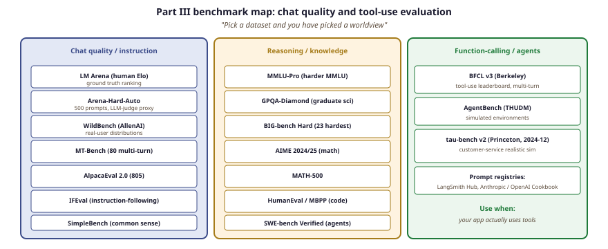

"The benchmark is the prompt is the curriculum is the evaluation. Pick a dataset and you have picked a worldview."
Census, Benchmark-Genealogist AI Agent
Part III's dataset layer differs from Part II's: instead of pretraining corpora at trillion-token scale, you care about instruction-tuning sets (Alpaca, ShareGPT, OpenAssistant, UltraChat), preference data (HH-RLHF, UltraFeedback, PRM800K), and the evaluation benchmarks that govern your prompt and your agent (MT-Bench, AlpacaEval, Arena-Hard, IFEval). This section catalogs them and tells you which to use when.
Prerequisites
This section assumes the instruction-tuning recipes from Section 8.1 and basic familiarity with Hugging Face Datasets from Section 12.4. The LLM-as-judge methodology covered later in the book deepens the evaluation aspects discussed here.
Part III's dataset layer differs from Part II's. You are not pretraining anything; you are calling APIs, building prompts, and measuring whether your calls work. The relevant datasets are prompt libraries, evaluation suites for instruction-following, and small public benchmarks you can run against any chat endpoint in minutes.
The benchmarks listed below are the ones whose numbers you will see quoted in model cards. Knowing what each measures (and what each does not measure) lets you read a "Claude beats GPT on X" claim with the right amount of skepticism.

14.3.1 Instruction-following and chat benchmarks
- AlpacaEval 2.0: pairwise LLM-as-judge eval against GPT-4-turbo on 805 prompts. Largely superseded by Arena-Hard-Auto for new work; still cited in older 2023-24 model cards.
- MT-Bench: 80 multi-turn questions across 8 categories, GPT-4 as judge. The reference multi-turn benchmark before Arena-Hard.
- Arena-Hard-Auto: 500 difficult prompts, LLM-as-judge. The current frontier-model proxy benchmark (Hard Prompts of Arena-Hard v2 landed in 2025).
- WildBench (AllenAI, 2024-25): real-user chat distributions; the dominant chat-eval benchmark in 2024-25 and often more discriminating than Arena-Hard.
- MMLU-Pro (2024): the harder MMLU successor; should sit next to GPQA in model-card tables.
- IFEval (Zhou et al., 2023, arXiv:2311.07911): the standard instruction-following benchmark.
- SimpleBench (Philip, 2024-25): contamination-resistant "common sense" benchmark widely cited in 2025 model cards.
- BIG-bench and BIG-bench Hard: a 200-task collection from Google. BBH is the 23 hardest subtasks; still used for reasoning evaluation.
14.3.1.1 BIG-Bench and BBH: How They Are Scored
The original BIG-Bench (Srivastava et al., 2022) bundles 204 tasks contributed by 444 authors across 132 institutions. Each task ships with a fixed prompt template, a small held-out evaluation split, and a per-task scoring function (exact match, multiple choice accuracy, BLEU, or task-specific). A model's BIG-Bench score is the macro-average of the normalised score across tasks:
so a model that ties the average crowdworker gets a 1.0 on that task and a random-guess baseline gets 0.0. The macro-average penalises models that are stellar on a few tasks but middling on the long tail of unusual ones, which was the whole point: BIG-Bench was designed to be wide rather than tall.
BBH (Suzgun et al., 2022) is the 23-task subset where the original BIG-Bench paper reported that no language model beat the average human evaluator. By 2024, Gemini 2.0 Pro reached 85% on BBH zero-shot and Claude 3.5 Sonnet reached 87%, so BBH is now reported as a saturating reasoning benchmark rather than a frontier one. It is still useful for spot-checking new architecture work on hard chain-of-thought reasoning.
# Run BBH zero-shot via lm-evaluation-harness
pip install lm-eval[hf]==0.4.4
lm-eval --model hf \
--model_args pretrained=meta-llama/Llama-3.1-8B-Instruct,dtype=bfloat16 \
--tasks bbh_zeroshot \
--batch_size 8 \
--output_path results/llama-3.1-8b-bbh.json
# Average per-task accuracy lands around 0.62 for Llama 3.1 8B Instruct,
# versus 0.85+ for the current frontier models.A 0.62 average BBH score sounds uniform, but the per-task spread is usually 0.20 to 0.95. Llama 3.1 8B Instruct's BBH report shows it scoring 0.93 on boolean_expressions (a closed-form evaluation task) but only 0.21 on tracking_shuffled_objects_seven (multi-step state tracking). When picking a small open model for an agentic product, ignore the BBH average and inspect the per-task scores that match your workload. A bot that calls Python tools cares about boolean_expressions; a personal-assistant bot that remembers many entities cares about tracking_shuffled_objects. Two models with the same 0.62 average can have wildly different fit for your task.
14.3.1.2 Related coding and agent benchmarks
- HumanEval and MBPP: canonical coding-task benchmarks. Heavily contaminated in 2026 but still required for model cards.
- SWE-bench: real GitHub issues turned into a benchmark. SWE-bench Verified is the human-validated subset; the standard for agentic-coding evaluation.
14.3.2 Prompt registries and example libraries
- LangSmith Hub: thousands of community-shared prompt templates with version history.
- Anthropic Cookbook: Anthropic-curated patterns (tool use, vision, prompt caching, computer use).
- OpenAI Cookbook: the most-cited prompt and orchestration recipe book on the web.
- awesome-chatgpt-prompts: enormous community prompt list. Best for inspiration, not for production.
14.3.3 Function-calling and tool-use benchmarks
- Berkeley Function-Calling Leaderboard (BFCL v3, 2024): tool-use evaluation across model families. v3 added multi-turn function-calling tracks.
- AgentBench: agentic-task evaluation across simulated environments.
- tau-bench / tau-bench v2 (2024-12): tool-use with realistic user simulation; the better benchmark for "does my agent actually solve a customer-service task". v2 fixed several validation issues from the original.
14.3.4 Comparing the chat benchmarks
| Benchmark | Format | Size | Judge | Best for |
|---|---|---|---|---|
| LM Arena | Blind pairwise | continuous | Human | Ground truth ranking |
| Arena-Hard | Hard prompts | 500 | LLM-as-judge | Cheap LM Arena proxy |
| AlpacaEval 2.0 | Pairwise vs GPT-4 | 805 | LLM-as-judge | Quick instruct-tuning eval |
| MT-Bench | Multi-turn | 80 | LLM-as-judge | Conversation flow |
| SWE-bench Verified | Real GitHub issues | 500 | Test suite | Coding agents |
If you score AlpacaEval with GPT-4 as judge, GPT-family models tend to score better. If you score with Claude as judge, Claude-family models tend to score better. The effect is small but real. The defenses are (a) report both judges, (b) use a deterministic test suite (SWE-bench, HumanEval) whenever feasible, and (c) trust LM Arena over any single LLM-judged benchmark for high-stakes decisions. The standard reference is "From Generation to Judgment: Opportunities and Challenges of LLM-as-judge" (Li et al., 2024, arXiv:2411.16594), which catalogues the failure modes.
SWE-bench Verified results swing 10-15 percentage points depending on whether the agent has internet access, how the test harness allocates retries, and how the patch-application logic handles malformed diffs. When a model card claims "X% on SWE-bench Verified", check the accompanying scaffolding description before comparing across labs. The agent loop, not the model, often dominates the score.
The most useful eval is the 30-prompt set you wrote that targets your actual use case. Run it against three model families at the start of any Part III project; revisit it whenever a new model is released. A custom 30-prompt benchmark with regression history beats any single public benchmark for "should I switch providers".
14.3.5 Public prompt corpora for fine-tuning
- Alpaca (52k synthetic instructions): the canonical instruction dataset of 2023; still used for Chapter 18 examples.
- UltraChat-200k: 200k multi-turn chats; the canonical "real instruction tuning" dataset.
- Tulu 3 SFT Mixture (~1M examples): the cleanest large open SFT dataset of 2025.
- Part III datasets are prompts and judgments, not corpora: AlpacaEval, MT-Bench, Arena-Hard, WildBench, IFEval, and SimpleBench measure instruction-following on chat endpoints in minutes, not pretraining at trillion-token scale.
- WildBench and Arena-Hard are the 2025 chat-eval workhorses: real-user distributions and 500 difficult prompts with LLM-as-judge typically discriminate models better than legacy MT-Bench and AlpacaEval, with LM Arena pairwise human Elo as the ground truth.
- SWE-bench Verified is the agentic-coding gold standard: 500 human-validated GitHub issues with deterministic test-suite judging, though scores swing 10-15 points based on harness scaffolding, not just model quality.
- Function-calling benchmarks consolidated around BFCL v3 and tau-bench v2: multi-turn function-calling on BFCL v3 plus realistic customer-service simulation on tau-bench v2 cover the actual tool-use surface for agent deployments.
- LLM-as-judge is biased toward its own family: GPT-4 judging favors GPT-family outputs, Claude judging favors Claude outputs, so reporting both judges, preferring deterministic test suites, and trusting LM Arena for high-stakes decisions all matter.
- A 30-prompt custom benchmark beats public ones: targeted regression coverage of your actual use case across three model families at project start is more useful than any single public leaderboard for "should I switch providers."
What's Next?
In the next section, Section 14.4: Models, we build on the material covered here.